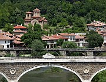
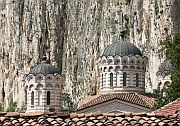

Disclaimer: These pages are not actively maintained, and some of the practical information on the site is out of date. I am working on a new version of the site that will focus more on my photos and memories of travel in Southeast Europe, and less on practical details that too easily become obsolete. In the meantime, please treat the information here with caution.
Tsarevets Citadel

Asenova quarter
Veliko Târnovo
There is nowhere else quite like Veliko Târnovo in Bulgaria. Sure, there are other places with fine 19th century architecture, interesting churches, and fortresses. But only in Veliko Tarnovo are these man-made structures set in such a dramatic landscape. The old town is perched on the steep sides of the gorge carved out by the contorted meanderings of the Yantra River. With a variety of worthwhile attractions in the surrounding countryside, Veliko Târnovo is one of Bulgaria's most appealing destinations. Of course this is hardly a secret: as well as the usual quota of hotels, Tarnovo has an astonishing number of estate agents, all of them advertising entirely in English. Go now, before somebody writes A Year in Bulgaria and the place turns into Provence.
Yantra River
What to see
The Tsarevets Citadel occupies a wonderful defensive position on a hill almost completely surrounded by a loop of the river. Tsarevets was the centre of Bulgaria's mediaeval Second Kingdom, one of the Golden Ages of Bulgarian history. To be honest, I think it looks better from a distance, where the scale of the ramparts can be appreciated - the walls seem to echo the cliffs that encircle the city. Within the walls there is not much left of the palace other than foundations. At the top of the hill the recently reconstructed Patriarchate Church looks slightly out of place.
The old town has a couple of museums and houses that are open to visitors, but the main attraction is simply strolling along its steep lanes. The convoluted terrain means that a new vista opens up around every corner. It also means that you may find yourself a short distance from your starting point but with no way of reaching it from the other side of the gorge. In most directions the town quickly blends into the countryside, with streets giving way to grassy cobbled lanes where you have to pick your way between the chickens.
One of those semi-rural districts is the Asenova quarter, on both sides of the river downhill from the entrance to the Citadel. There are a number of churches here, including SS Petar I Pavel, whose much-restored exterior conceals some lovely mediaeval frescos. Another good place for a wander is the Sveta Gora hill - the one with the prominent black obelisk. The road around this hill has some of the best views of both the old town and the citadel (especially as you can't see the art gallery, a rather unsympathetic modern construction near the obelisk).
Preobrazhenski

Sveta Troitsa
Around Veliko Târnovo
If you poke around the Varosh district, the highest part of the old town, you should find the start of a signposted "Eco Trail". This leads over the plateau to Preobrazhenski Monastery, an enjoyable walk of an hour or so. The monastery, high up on a wooded hillside, is notable for the frescos on the walls of its church - the best known is the 'Wheel of Life'.
The Sveta Troitsa Convent is located opposite Preobrazhenski on the other side of the river. It can be reached by following a minor road from the Asenova quarter. I suggest sticking to the road rather than trying to follow confusing trail markings through the woods - there is little traffic on the lane anyway, you will probably be alone with the lizards. The beautifully maintained convent is attractively located below towering white cliffs.
The town of Tryavna is an easy and enjoyable half-day trip from Veliko Târnovo. Its old town features a harmonious collection of traditional architecture, centred around an attractive main square with a clock tower. It's much more low-key and less tourist-oriented than Târnovo, although I noticed a couple of estate agencies even here. There are a number of museums, including the Daskalov House, famous for two elaborately carved wooden ceilings. Examples of traditional crafts are displayed in a Museum of Icon-painting and Woodcarving.
If you want to see more traditional architecture, the villages of Elena, Etara, and Arbanasi are within easy reach of Veliko Târnovo. There are more monasteries too, such as Kilifarevo and Dryanovski.
Practicalities
Tryavna
Târnovo's train station is located on a north-south line with only a handful of long distance trains daily. One of these is the Bosfor Express from Bucharest to Istanbul, making Târnovo a possible first or last stop in Bulgaria. There are few trains to Plovdiv, so bus may be a better option - especially as the route crosses the Balkan Mountains at the very scenic Shipka Pass. It's a stiff uphill walk from the train station to the town, so you might want to pick up a bus or a taxi.
Heading east or west by train means first getting to Gorna Oryahovitsa, a station on the main Sofia-Varna line. Buses and taxis cover the 13km from Târnovo. It may be quicker to get a direct bus, as comfortable and fast buses from Sofia to Varna stop here frequently. Many pick up passengers at the conveniently central Hotel Etar.
Buses to Gorna Oryahovitsa pass the access road to Preobrazhenski Monastery, but this still leaves you with a few kilometres to walk, so you may as well follow the trail mentioned earlier. There is no public transport to Sveta Troitsa.
The easiest way to reach Tryavna is by train (one hour), but check the timetable carefully as there are some long gaps between trains.
More photos of Veliko Târnovo in my Bulgaria Galleries